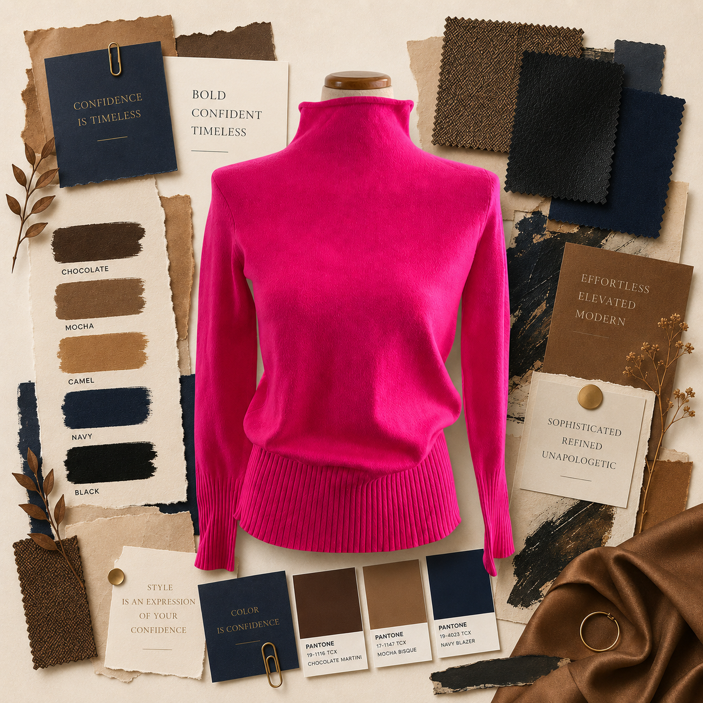

Open Essay ↗
Self reflection a week before I turn a quarter of a century old ↗
A reflection on loss, resilience, and the quieter optimism that emerges with experience.
A reflection on loss, resilience, and the quieter optimism that emerges with experience.
A poem on adulthood.

Open Essay ↗The strange way color preference becomes powerful.